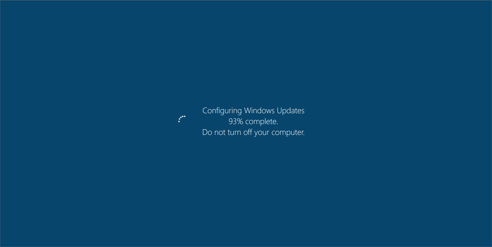
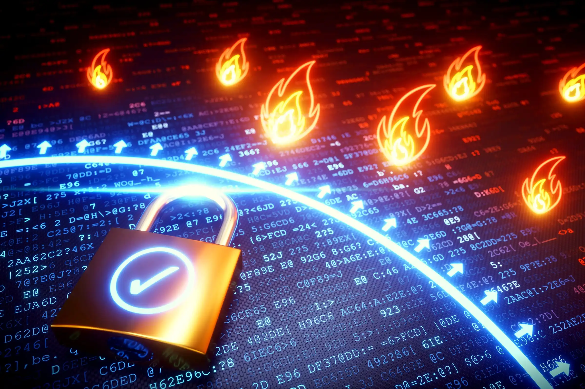

Vandaag de dag is cyberveiligheid belangrijker dan ooit.
Met steeds meer toenemende bedreigingen voor bedrijven is het hebben van een robuuste beveiligingsoplossing absoluut noodzakelijk.
Je hebt vast wel eens gehoord van bedrijven die enorme boetes betalen of zelfs failliet gaan vanwege een simpele hack van hun systemen.
Als je dat nog nooit hebt gehoord is dat om dezelfde reden.
Er zijn gewoon te veel bedreigingen om de risico’s te negeren – van ransomware tot phishing, het kan je een hoop geld kosten.
Of je dat nou wil of niet.
Preventie is essentieel, dus laten we je 10 manieren zien om cyberaanvallen te voorkomen en hoe jij jouw bedrijf effectief kunt beschermen.
- Train jouw Personeel
Een van de meest voorkomende manieren waarop cybercriminelen toegang krijgen tot jouw gegevens is via jouw werknemers.
Ze sturen frauduleuze e-mails waarin ze zich voordoen als iemand in je organisatie en vragen om persoonlijke gegevens of om toegang tot bepaalde bestanden.
Links lijken vaak legitiem voor een ongetraind oog en het is gemakkelijk om in de val te trappen.
Daarom is bewustwording van medewerkers van cruciaal belang.
Een van de meest efficiënte manieren om jou te beschermen tegen cyberaanvallen en alle soorten datalekken
is door je medewerkers te trainen in het voorkomen van cyberaanvallen en hen te informeren over actuele cyberaanvallen.
Ze moeten het volgende doen:
-
Links controleren voor ze erop klikken
-
E-mail adressen van ontvangen e-mails controleren
-
Gezond verstand gebruiken voor ze gevoelige informatie verzenden.
Als het een vreemd/verdacht verzoek lijkt, is het dat waarschijnlijk ook.
Het is dan beter om dit te controleren via een telefoontje met de persoon in kwestie.
Doe dit altijd voor u het verzoek goedkeurt/uitvoert!

- Houdt uw Software en Systemen up-to-date
Vaak vinden cyberaanvallen plaats omdat uw systemen of software niet volledig up-to-date zijn,
waardoor er zwakke plekken ontstaan.
Cybercriminelen maken misbruik van deze zwakke punten om toegang te krijgen tot uw netwerk.
Als ze eenmaal binnen zijn, is het vaak te laat om preventieve maatregelen te nemen.
Om dit tegen te gaan, is het slim om te investeren in een patchbeheersysteem dat alle software en systeemupdates beheert,
zodat uw systeem veerkrachtig en up-to-date blijft.
- Zorg voor Endpointbescherming
Endpointbescherming beschermt netwerken die op afstand zijn overbrugd naar apparaten.
Mobiele apparaten, tablets en laptops die zijn verbonden met bedrijfsnetwerken bieden toegangspaden tot beveiligingsrisico's.
Deze paden moeten worden beschermd met specifieke endpoint protection software.

- Installeer een Firewall
Er zijn zoveel verschillende soorten geavanceerde datalekken. Elke dag komen er nieuwe aan de oppervlakte en sommigen maken zelfs comebacks.
Je netwerk achter een firewall plaatsen is een van de meest effectieve manieren om uzelf te verdedigen tegen een cyberaanval.
Een firewallsysteem blokkeert alle brute force-aanvallen op uw netwerk en/of systemen voordat het schade kan aanrichten, iets waar wij u bij kunnen helpen.
- Maak een Back-Up van je Gegevens
In het geval van een ramp (vaak een cyberaanval) moet u een back-up van uw gegevens hebben om ernstige downtime,
verlies van gegevens en ernstige financiële verliezen te voorkomen.
- Controleer de Toegang tot jouw Systemen
Geloof het of niet, een van de aanvallen die je op jouw systemen kunt ontvangen, kan fysiek zijn,
controle hebben over wie toegang heeft tot jouw netwerk is echt heel belangrijk.
Iemand kan gewoon jouw kantoor of onderneming binnenlopen en een USB-sleutel met geïnfecteerde bestanden op een van jouw computers aansluiten,
waardoor ze toegang krijgen tot uw hele netwerk of het infecteren.
Het is essentieel om te bepalen wie toegang heeft tot jouw computers.
Het laten installeren van een perimeterbeveiligingssysteem is een zeer goede manier om cybercriminaliteit net zo goed te stoppen als inbraken!
- WiFi-Beveiliging
Wie heeft er in 2024 geen wifi-apparaat?
En dat is precies het gevaar, elk apparaat kan geïnfecteerd raken door verbinding te maken met een netwerk,
als dit geïnfecteerde apparaat vervolgens verbinding maakt met jouw bedrijfsnetwerk loopt je hele systeem ernstig gevaar.
Het beveiligen en verbergen van jouw wifi-netwerken is een van de veiligste dingen die je voor jouw systemen kunt doen.
Nu draadloze technologie zich elke dag meer en meer ontwikkelt,
zijn er duizenden apparaten die verbinding kunnen maken met jouw netwerk en jou in gevaar kunnen brengen.
- Persoonlijke Accounts van Werknemers
Elke medewerker heeft voor elke applicatie en elk programma een eigen login nodig.
Meerdere gebruikers die verbinding maken met dezelfde inloggegevens kunnen jouw bedrijf in gevaar brengen.
Door voor elk personeelslid aparte logins te hebben, kunt je het aantal aanvalsfronten verminderen.
Gebruikers loggen slechts één keer per dag in en gebruiken alleen hun eigen set logins.
Betere beveiliging is niet het enige voordeel, jij krijgt ook een betere bruikbaarheid.
- Toegangsbeheer
Een van de risico's als bedrijfseigenaar en het hebben van werknemers,
is dat ze software installeren op apparaten die eigendom zijn van het bedrijf en die jouw systemen in gevaar kunnen brengen.
Het hebben van beheerde admin rechten en het blokkeren van uw personeel dat bepaalde gegevens op uw netwerk
installeert of er zelfs toegang toe heeft, is gunstig voor uw veiligheid.
Het is jouw zaak, bescherm die!
- Wachtwoorden
Het kan gevaarlijk zijn om voor alles hetzelfde wachtwoord in te stellen.
Zodra een hacker jouw wachtwoord heeft achterhaald, heeft hij nu toegang tot alles in jouw systeem en elke applicatie die jij gebruikt.
Het is misschien wel voordehandliggend, maar het instellen van
verschillende wachtwoorden voor elke applicatie die je gebruikt,
is een echt voordeel voor jouw veiligheid,
en als je ze ook nog eens vaak wijzigt, blijft een hoog niveau van
bescherming tegen externe en interne bedreigingen behouden.
Je kan ook gebruik maken van een wachtwoordenkluis zoals
Bitwarden.
En het gebruik van multi-factor authenticatie is altijd een goed idee.
- Conclusie
Het kan moeilijk zijn om te weten waar je moet beginnen als het gaat om het beschermen van jouw bedrijf tegen cybercriminaliteit en cyberaanvallen.
Er is zoveel informatie dat het overweldigend kan worden, vooral als de informatie tegenstrijdig is.
Jij hebt een oplossing nodig die geschikt is voor jouw bedrijf en jouw werknemers.
Neem vandaag nog contact met ons op voor vragen over cybersecurity en geef criminelen geen enkele kans.
Wij kunnen jou helpen jouw reis naar veiligheid een vliegende start te geven.